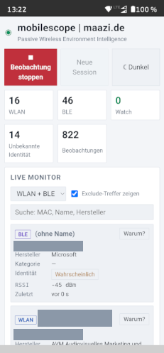
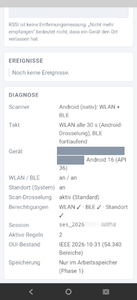
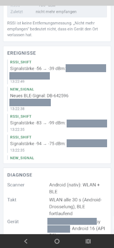
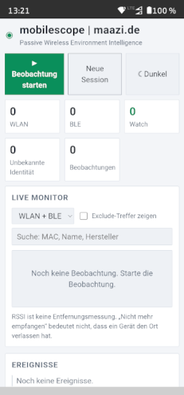

Passive Wireless Environment Intelligence
Sieh, was im Funk los ist – und warum die App es so einordnet. APK Android 13+ ! See what is on the air – and why the app classifies it that way. mobilescope wächst Schritt für Schritt. Echte Dateien gibt es Bald. mobilescope grows step by step. Real files will be available soon.


Frühe Version 0.1 · Debug-APK, noch kein Store-Release. Early version 0.1 · debug APK, not a store release yet.
Das PrinzipThe principle
mobilescope ist ein Messwerkzeug für Techniker, Ingenieure und Wissenschaftler. Es empfängt WLAN- und Bluetooth-LE-Signale passiv und zeigt zu jeder Einordnung die Begründung, die Sicherheit und die Grenzen der Aussage. Keine Scheinprozente, kein „Geräte in der Nähe“-Spielzeug.
mobilescope is a measurement tool for technicians, engineers and scientists. It receives WLAN and Bluetooth LE signals passively and shows the reasoning, the confidence and the limits of every classification. No fake percentages, no “devices near me” toy.
Grenzen: Der Hersteller nennt den registrierten Adressblock, nicht Modell oder Besitzer. BLE-Adressen können zufällig wechseln.
Limits: The manufacturer names the registered address block, not model or owner. BLE addresses may rotate randomly.
Im EinsatzIn use


FunktionenFeatures
| Information | Information | Bedeutet | Means | Bedeutet nicht | Does not mean |
|---|---|---|---|---|---|
| RSSI | Empfangsstärke an diesem Gerät | Signal strength at this device | Entfernung oder Position | Distance or position | |
| OUI | Registrierter Adressblock eines Herstellers (IEEE) | Registered manufacturer address block (IEEE) | Modell, Besitzer, Zweck | Model, owner, purpose | |
| Erste / letzte Beobachtung | First / last observation | Zeitraum des Empfangs | Time span of reception | Anwesenheit | Presence |
Jede Beobachtung wird lokal gesichert, alle 30 s und beim Stoppen. Pro Signal: RSSI min / Ø / max, Zeitraum, Anzahl, Evidenz.
Every observation is saved locally, every 30 s and on stop. Per signal: RSSI min / avg / max, time span, count, evidence.
CSV für Excel (Semikolon, UTF-8) oder JSON inklusive Evidenz und Verlauf, wieder importierbar. Optional: Adressen kürzen, Namen weglassen.
CSV for spreadsheets (UTF-8) or JSON including evidence and history, re-importable. Optional: shorten addresses, omit names.
Kurze TippsQuick tips
mobilescope wächst Schritt für Schritt. Echte Dateien gibt es Bald.
mobilescope grows step by step. Real files will be available soon.
mobilescope wertet nur Funk-Metadaten aus, die Geräte offen aussenden. Es verbindet sich mit keinem fremden Gerät, entschlüsselt nichts, sendet nichts und speichert keinen Standort. Bitte nutze es als Messwerkzeug: nicht, um Personen zu verfolgen, und nur dort, wo du messen darfst. MAC-Adressen und BLE-Kennungen können personenbezogen sein.
mobilescope only evaluates radio metadata that devices broadcast openly. It connects to no foreign device, decrypts nothing, sends nothing and stores no location. Please use it as a measurement tool: not to track people, and only where you are allowed to measure. MAC addresses and BLE identifiers can be personal data.
Nach unserem Verständnis ist ein passiver Empfänger offener Metadaten ein Dual-Use-Werkzeug wie gängige WLAN-Analyzer-Apps; für Missbrauch haftet, wer die Software missbraucht oder verändert. Das ist keine Rechtsberatung. Die Software steht unter der Apache-Lizenz 2.0, ohne Gewährleistung.
To our understanding, a passive receiver of open metadata is a dual-use tool like common WLAN analyzer apps; whoever misuses or modifies the software is responsible for that misuse. This is not legal advice. The software is licensed under the Apache License 2.0, without warranty.